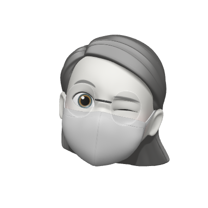

선택하신 음식을 분석 해 본 차트입니다!
코로나 예방에 특히 좋은 것으로 확인 된 영양소와,
현재까지 섭취한 음식에 담긴 영양소를 확인하실 수 있어요!
{% block diet_chart %}
{% endblock %}

마지막으로 COVID-진단 KIT로 증상별 확진률을 알 수 있습니다
해당하는 증상에 체크 해주시면 최종 검사 결과를 안내 해 드릴게요!

{% block checker %}
{% endblock %}